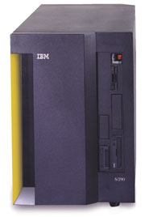
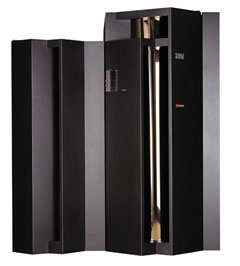
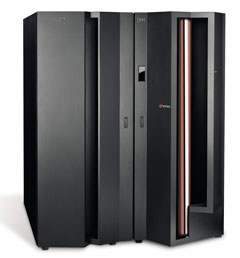

Олег Таковицкий
В сравнительно недолгой истории вычислительной техники мэйнфреймы обычно выступают как главные действующие лица. Действительно, эти компьютеры, иначе еще называемые большими ЭВМ, в эпоху 60-80-х гг. прошедшего столетия практически безраздельно господствовали на рынке информационных технологий. К началу 80-х деление компьютеров на большие, мини- и микромашины было простым и понятным. Оно определялось ценой, физическими размерами, производительностью, масштабом решаемых задач, используемым системным ПО (прежде всего операционной системой), а также архитектурой. Само понятие "мэйнфрейм" неразрывно связано с именем их первого производителя, корпорации IBM (http://www.ibm.com).
И все же мэйнфреймы - это нечто большее, чем просто мощные и дорогие машины. Она были и остаются основой обеспечения надежности, безопасности и целостности информационных систем. А главное - вот уже несколько десятилетий эти компьютеры служат форпостом централизации функций и данных, так и не павшим под натиском распределенных вычислений. В наши дни центробежные силы контроля и управления в архитектурных решениях начинают менять направление, превращаясь в центростремительные. Становится ясно, что без централизации ресурсов (иначе говоря, консолидации) решить многие серьезные бизнес-задачи практически невозможно.
В конце прошлого века с чьей-то легкой руки (говорят, это был один из топ-менеджеров Sun Microsystems) мэйнфреймы нарекли динозаврами. К тому же пресса и ведущие исследовательские агентства вольно или невольно способствовали созданию их негативного образа. Многие стали воспринимать мэйнфреймы как вчерашний день вычислительной техники, считая Unix- и ПК-серверы более современными и перспективными.
Вообще говоря, одной из причин резкого уменьшения интереса к мэйнфреймам в 80-х годах было бурное развитие PC и Unix-ориентированных машин, в которых благодаря применению новой технологии создания КМОП-микросхем удалось значительно уменьшить энергопотребление, а их размеры достигли размеров настольных станций. В то же время для установки мэйнфреймов требовались огромные площади, а использование устаревших полупроводниковых технологий влекло за собой необходимость водяного охлаждения. Так что, несмотря на их вычислительную мощь, из-за дороговизны и сложности обслуживания мэйнфреймы все меньше пользовались спросом на рынке вычислительных средств.
Главный же аргумент против мэйнфреймов состоял в том, что в них не соблюдается основной принцип открытых систем, а именно совместимость с другими платформами.
Отнесясь к критике конструктивно, руководство компании IBM, основного производителя аппаратного и программного обеспечения мэйнфреймов, выработало кардинально новую стратегию в отношении этой платформы с целью резко повысить производительность, снизить стоимость владения, а также добиться высокой надежности и доступности систем. Достижению этих планов способствовали важные перемены в технологической сфере: на смену биполярной технологии изготовления процессоров для мэйнфреймов пришла наконец технология КМОП. Переход на новую элементную базу позволил значительно снизить уровень энергопотребления мэйнфреймов и упростить требования к системе электропитания и охлаждения (водяное охлаждение было заменено воздушным). Мэйнфреймы на базе КМОП-микросхем быстро прибавляли в производительности и теряли в габаритах. Наиболее же кардинальным событием стал переход на 64-разрядную архитектуру z/Architecture. Современные мэйнфреймы перестали быть закрытой платформой: они способны поддерживать на одной машине сотни серверов с различными ОС, включая Linux.
Среди базовых отличий мэйнфреймов от обычных серверов, как правило, отмечают то, что мэйнфреймы поддерживают высокий уровень надежности благодаря избыточности аппаратного обеспечения, а операционные системы для них оптимизированы в основном для пакетного режима работы и обработки транзакций. Тем не менее в IBM полагают, что одной из важнейших причин признания рынком систем zSeries стала поддержка ими таких нетипичных для мэйнфреймов задач, как приложения для Linux и Web.
Мэйнфреймы высоко ценят за их устойчивость по отношению к таким проблемам, как отказ центрального процессора. Они оснащаются специальным ПО, а их подсистемы памяти и передачи данных отличаются от тех, что используются в большинстве серверов. Способность мэйнфреймов обрабатывать гигантское количество транзакций в секунду обеспечила им широкое применение при решении таких задач, как управление сетями сбыта или ведение банковских счетов.
Слухи о смерти мэйнфреймов сильно преувеличены. Общие объемы поставок серверов zSeries, измеренные в единицах вычислительной мощности MIPS (миллионы команд в секунду), выросли в I квартале этого года на 3% по сравнению с аналогичным периодом прошлого года. На продажи мэйнфреймов пришлось 3 млрд долл. в общем обороте IBM за 2002 год, который составляет 81 млрд долл. Несмотря на пессимизм некоторых аналитиков, эти системы популярны и в XXI веке. Так, согласно одному из прогнозов Gartner Group, последний мэйнфрейм предполагалось выключить еще в 1993 году. Срок этого прогноза давно истек, а рынок мэйнфреймов остается стабильным.
Тут стоит напомнить, что, по одной из теорий, динозавры не вымерли, а превратились в птиц.
|  | Мэйнфрейм IBM S/390.
|
Первые "ласточки"
В сердце информационной системы работают обычно компьютеры наивысшего уровня надежности и производительности, рассчитанные на то, чтобы выдерживать любые мыслимые уровни нагрузки, быть готовыми к различным сбоям и авариям. Это серия мощных, масштабируемых, удобных в управлении и надежных систем. Это больше, чем системы, - скорее, это решения, отвечающие требованиям корпоративных задач самого разного масштаба: от рабочих групп до крупных центров хранения данных.
Данные системы пригодны для решения практически любых задач - от научных и инженерных до деловых, требующих больших вычислительных мощностей. Они имеют хорошо сбалансированную многопроцессорную архитектуру, с возможностью загрузки нескольких независимых копий ОС. Масштабируемость архитектуры позволяет при увеличении количества процессоров и памяти получать расчетный, контролируемый прирост производительности. Большой объем оперативной памяти в таких системах создает новые, ранее недоступные возможности во многих прикладных областях - от ведения больших резидентных баз данных до сложных научных вычислений, в таких, например, областях, как исследование генома человека или морская нефтеразведка.
Когда в октябре 2000 г. в IBM приступили к ребрэндингу своих серверных систем, эти преобразования были представлены как реакция на растущие требования бизнеса в Интернете. Руководство корпорации объявило о своем намерении использовать на всех платформах открытые стандарты и продукты (TCP/IP, HTML, Java, XML, Apache) и желании поддерживать быстро приобретающую популярность ОС Linux. Именно тогда мэйнфреймы получили название eServer zSeries - оно указывает на нулевое (zero down time) время простоя этих систем.
Архитектура z/Architecture, на которой основаны системы zSeries, обеспечивает новый стандарт производительности и интеграции, выступающий как продолжение концепции сбалансированной системы в архитектуре S/390. Такие системы способны устранять узкие места, связанные с недостатком адресуемой памяти, предоставляя фактически неограниченные возможности 64-разрядной адресации и обеспечивая огромный запас для непредвиденных рабочих нагрузок и приложений растущего предприятия.
Процессоры для мэйнфреймовПоследние несколько лет IBM заимствовала у своих мэйнфреймов технологию для других семейств серверов. Теперь часто говорят, что этот процесс пошел вспять. Компания рассматривает проект существенной переработки архитектуры мэйнфреймов zSeries с тем, чтобы использовать в этих машинах те же процессоры Power и прочие технологии, что и в менее дорогих серверах pSeries и iSeries. Применяя одни и те же процессоры во всех семействах продуктов, IBM получает возможность существенно снизить стоимость и сократить время выхода мэйнфреймов на рынок, а также уменьшить расходы на их техническое обслуживание. Однако для этого в новые процессоры должны быть внесены усовершенствования, приближающие их к процессорам мэйнфреймов. Например, процессор мэйнфрейма включает два процессорных ядра, которые одновременно выполняют одни и те же операции. Если результаты получаются разными, вычисление автоматически повторяется - возможно, несколько раз, и, если разница все равно сохраняется, задача передается другому процессору. Переход на новые процессоры - задача не из легких, но у IBM уже есть подобный опыт. Компании удалось перевести семейство AS/400 на архитектуру Power, не потеряв своих заказчиков. Кристаллы Blue Flame, объединенные в многокристальные процессорные модули, специально предназначены для высокоуровневых систем zSeries. 20% площади на Blue Flame отведено непосредственно для поддержки функций RAS (Reliability, Availability, Serviceability - надежность, готовность, обслуживаемость), чтобы наделить компьютерные системы возможностью без отключения реагировать на ошибки и выполнять техническое обслуживание. По словам представителей корпорации, наличие области RAS - одно из основных достоинств Blue Flame, дающее значительное преимущество перед альтернативными процессорами. Подобные аппаратные решения позволят IBM сосредоточиться не только на поиске ошибок в системах, но и на сборе информации, которая позволит защищаться от будущих сбоев.
|
Новым флагманом мэйнфреймов стала серия компьютеров IBM eServer zSeries 900, оптимизированная для задач электронного бизнеса. В ее состав входят 64-разрядные многопроцессорные системы с оперативной памятью 64 Гбайт и с пропускной способностью системы ввода-вывода и адаптеров сетевых каналов, составляющей 24 и 3 Гбайт/с соответственно. Производительность zSeries 900 превышает 2500 MIPS. Важнейший их компонент - 20-процессорный модуль MCM (Multi-Chip Module). Его 16 процессоров предназначены для исполнения прикладных задач в SMP-режиме, а остальные выполняют такие системные функции, как управление вводом-выводом, восстановление при возникновении ошибок, криптозащита.
|  | Система zSeries 900.
|
Каждая система может работать автономно или в составе кластера Parallel Sysplex совместно с другими компьютерами zSeries и рядом систем IBM S/390. Кластер обеспечивает высокую масштабируемость и исключительный уровень готовности. До 32 систем zSeries 900 могут объединяться в кластеры на базе технологии Parallel Sysplex.
В 15 логических разделах zSeries 900 могут независимо друг от друга работать различные ОС (z/OS, z/VM и Linux for zSeries), обращаясь к общим системным ресурсам.
Полностью интегрированная с аппаратными средствами и микрокодами zSeries 900 64-разрядная z/OS с ядром MVS обеспечивает благодаря технологии Intelligent Resource Director (IRD) автоматическое распределение системных ресурсов между приложениями в соответствии с присвоенными им приоритетами. Вообще говоря, IRD семейства zSeries объединяет преимущества трех основных технологий: администратора нагрузки Workload Manager, логического создания разделов Logical Partitioning и параллельной кластеризации Parallel Sysplex.
Система способна динамически выделять процессорное время, каналы и взаимодействия канал - контроллер среди множества виртуальных серверов, чтобы обеспечить интеллектуальное обслуживание непредсказуемых нагрузок электронного бизнеса в соответствии с приоритетами бизнеса. Функция Sysplex Distributor операционной системы z/OS - еще одна возможность интеллектуальной балансировки TCP/IP-трафика через Parallel Sysplex. Поддержка динамической виртуальной IP-адресации (Dynamic Virtual Internet Protocol Addressing, VIPA) расширяет в TCP/IP-сети функции распределения рабочей нагрузки и готовности в Parallel Sysplex.
Технология Hyper Sockets позволяет формировать IP-соединения между логическими разделами и передавать информацию между ними с быстродействием оперативной памяти. Linux for zSeries поддерживает оригинальные приложения для этой ОС. При применении z/VM в одном логическом разделе можно исполнять сотни приложений, реализуя множество виртуальных серверов. Так, на одной системе можно параллельно запустить до 1000 виртуальных Linux-серверов, создав таким образом эффективную "сеть в одном корпусе".
Готовность
Системы семейства zSeries обеспечивают высокий уровень готовности приложений, необходимый в глобальной сетевой среде. Даже один сервер zSeries способен избегать сбоев и восстанавливаться после отказов, сокращая до минимума сбои бизнес-процесса.
Высокая надежность компонентов и особенности конструкции позволяют предотвращать отказы и обеспечивать устойчивость к сбоям, а также проводить горячее обслуживание и ремонт. Расширенное динамическое резервирование памяти (Enhanced Dynamic Memory Sparing), резервирование ESCON-портов, горячее обслуживание/модернизация Coupling Links, горячее обслуживание плат ввода-вывода (Concurrent Service for I/O Cards) и автоматическое переключение сервисных элементов (Auto-Switch over for Service Elements) - вот лишь некоторые встроенные функции, позволяющие сократить как плановые, так и внеплановые простои.
Для систем, где требуются более высокие уровни готовности, предназначены серверы zSeries с технологией кластеризации IBM Parallel Sysplex. Более быстрые подключения обеспечивают сбалансированную производительность мощного сервера zSeries 900 в Sysplex-кластере. ISC-связи обеспечивают скорости передачи до 2 Гбайт/с, а ICB-связи - до 1 Гбайт/с. При этом сохраняется обратная совместимость с аналогичными связями в системах S/390.
Еще один аспект готовности - это возможность непрерывного роста zSeries, обеспечиваемая функцией увеличения емкости системы хранения по требованию. Серверы zSeries 900 способны увеличивать объем системы хранения и создавать виртуальные серверы без перерыва в работе, а также устанавливать карты FICON, ESCON, OSA-Express ATM и Gigabit и Fast Ethernet и PCI-карты криптографического сопроцессора; кроме того, поддерживается инициация памяти без отключения системы.
Безопасность
Встроенные функции защиты архитектуры z/Architecture обеспечивают IBM лидирующие позиции по обеспечению безопасности электронного бизнеса. Криптографические КМОП-сопроцессоры соответствуют государственному информационному стандарту обработки информации США - FIPS 140-1 четвертого уровня (самому высокому уровню сертификации коммерческого средства безопасности, когда-либо присвоенному правительством США). Эти сопроцессоры конструктивно размещены в модуле с единым чипом. При этом каждый из них может обслуживаться независимо, что устраняет простои при ремонте криптографического кристалла.
Серверы zSeries 900 способны поддерживать до 16 PCICC-сопроцессоров, поставляемых по требованию, что позволяет им выполнять более двух тысяч SSL-операций в секунду. Благодаря комбинации двух типов сопроцессоров приложения могут использовать отраслевые криптографические стандарты DES, Triple DES и RSA для обеспечения масштабируемой безопасности и гибкости при быстром переходе на новые стандарты.
Самоуправляемость вычислительных систем
Компьютеры eServer zSeries спроектированы и построены с активным применением основных технологий из проекта eLiza, направленного на создание самоуправляемых систем. Цель проекта - создание интеллектуальной, самоуправляемой инфраструктуры ИТ, которая сведет к минимуму сложность управления ею.
Серверы серии IBM eServer предлагают широкий спектр новых решений, присущих самоуправляемым вычислительным системам и основанных на четырех основных принципах.
Автоматическая конфигурация (Self-configuring)
Важнейшие элементы системы автоматической конфигурации - это автоматическое определение новых аппаратных ресурсов и механизм динамического распределения ресурсов ОС. Аппаратные подсистемы и ресурсы могут автоматически изменять собственные параметры работы как на стадии загрузки системы, так и во время выполнения задач. Причинами для перераспределения ресурсов могут стать сбои в работе оборудования, ошибки во встроенном системном ПО или изменение текущих параметров оптимизации. Допускается также изменение конфигурации аппаратных ресурсов по требованию администраторов, обслуживающего персонала или программы, осуществляющей управление аппаратными ресурсами.
Автоматическое восстановление (Self-healing)
Механизм самовосстановления позволяет немедленно обнаружить и локализовать неполадки в работе оборудования или встроенного ПО, минимизируя возможные последствия сбоев, которые способны негативно повлиять на работу ОС и приложений.
Автоматическая оптимизация (Self-optimizing)
Встроенный механизм оптимизации определяет текущую нагрузку на различные аппаратные ресурсы и автоматически изменяет конфигурацию аппаратных ресурсов, добиваясь максимальной производительности.
Самозащита (Self-protecting)
Этот механизм обеспечивает защиту вычислительной системы от внутренних и внешних атак, угрожающих целостности и конфиденциальности приложений и данных.
Проект eLizaЭтот проект реализует концепцию автономных вычислений. Он служит фундаментом для создания информационных систем с уменьшенной сложностью и стоимостью эксплуатации, использования, администрирования. Цели проекта eLiza сформулированы как самооптимизация, самоконфигурирование, самовосстановление и самозащита. Считается, что проект eLiza позволяет преодолеть такие трудности на пути электронного бизнеса по требованию, как сложность управления и эффективность использования ресурсов. По данным экспертных фирм процент эффективного использования ресурсов для мэйнфреймов в среднем составляет 40%. Эта цифра может показаться невысокой, но для Unix-машин она составляет всего 10%, а для Windows-машин - 5%. Мэйнфреймы первыми столкнулись с проблемой эффективного использования ресурсов, и серверы zSeries и z/OS находятся на переднем крае реализации проекта eLiza. Однако результаты его немедленно переносятся и на другие платформы IBM. Так, сегодня все четыре серверные платформы IBM обеспечивают логическое разделение - возможность представления одного мощного сервера в виде нескольких отдельных виртуальных компьютеров, возможно, с разными операционными средами и разными производительными и функциональными возможностями, но с единым центром управления. Задачи автономизации вычислений, стоящие перед проектом eLiza, сочетаются с задачами Grid-вычислений, поэтому эти инициативы развиваются согласованно. Эволюция концепции самоуправляемых информационных систем привела к возникновению новой стратегической инициативы компании IBM - Autonomic Computing. Примечательно, что это произошло в тот момент, когда IBM объявила о намерении возглавить движение по созданию нового поколения решений для электронного бизнеса, объединив усилия различных поставщиков решений, сообщества приверженцев открытых стандартов и пользователей. Помимо интеллектуальных функций самозащиты и самовосстановления, разрабатываемых в рамках проекта eLiza, новая инициатива IBM призвана обеспечить динамическую адаптацию вычислительных систем к условиям деловой активности предприятия. Новое название отражает более универсальный и глубинный характер концепции. Идеи самоуправления, положенные в основу проекта eLiza и имеющие множество верных сторонников, получают дальнейшее развитие, открывая перспективу совершенствования бизнеса без нарушения отлаженных процессов и деловых механизмов.
|
Маленький "хищник"
В прошлом году корпорация IBM анонсировала IBM zSeries 800 (ранее известную под кодовым названием Raptor - "хищник"), новую недорогую систему начального уровня, которая сумела радикально изменить ценовые характеристики рынка мэйнфреймов. Новая система выпускается в нескольких вариантах: восемь моделей общего назначения и единственный в своем роде мэйнфрейм под полным управлением Linux. Отличаются они прежде всего числом процессоров (от одного до четырех) и объемом оперативной памяти (от 8 до 32 Гбайт).
С выпуском zSeries 800 корпорация IBM смогла предложить надежность и производительность технологии zSeries заказчикам, которым мэйнфреймы раньше были не по средствам. Кроме того, IBM впервые реализовала современную технологию кластеризации Parallel Sysplex на мэйнфреймах начального уровня. Напомним, что данная технология обеспечивает практически нулевое время простоя, высокую доступность приложений и надежность бизнеса за счет объединения нескольких мэйнфреймов в сетевой кластер.
Заказчики, использующие мэйнфреймы, все чаще добавляют новые Web-приложения в существующие инфраструктуры для экономии энергии, пространства и расходов на управление. Система zSeries 800 предназначена для бизнес-партнеров IBM, которым требуются варианты объединения серверов для заказчиков со средним уровнем финансовых возможностей. Новая система позволяет отказаться от дорогостоящих и недозагруженных серверных пулов, составленных из Web-серверов, файловых серверов, серверов печати и электронной почты, за счет переноса всей нагрузки на один мэйнфрейм, и таким образом упростить администрирование и снизить затраты. Благодаря технологии виртуальных машин IBM z/VM система zSeries 800 может объединить от 20 до нескольких сотен серверов Sun или Intel на одной физической платформе.
В последние несколько лет ОС Linux завоевала устойчивые позиции в таких областях, как электронная коммерция, Web-сервис, почтовые службы, разработка и тестирование приложений и многое другое. Одно из главных преимуществ Linux - способность легко адаптироваться к множеству аппаратных платформ и работать с разнообразными программами в распределенных вычислительных средах. Таким образом, пользователям и разработчикам, имеющим дело с Linux, не обязательно изучать различные ОС. Linux предоставляет полную открытость и аппаратную независимость. По этим причинам она широко предлагается как надежная, базирующаяся на открытых стандартах, экономичная альтернатива другим ОС, таким, как Unix и Windows. Но Linux обычно работает на нескольких отдельных серверах, что не всегда обеспечивает нужные для центров обработки данных производительность, гибкость, функциональность, интеграцию и управляемость. Более того, аппаратная независимость Linux может в ряде случаев обернуться повышением стоимости технической поддержки.
Современная технология zSeries 800 предоставляет экономичную и гибкую среду для разработки, тестирования и эксплуатации приложений, переноса приложений с 32-разрядной на 64-разрядную платформу и новых рабочих нагрузок электронного бизнеса.
В системе zSeries 800 нашли применение технологии самовосстановления и самоуправления, реализованные в компьютерах IBM, включая резервные мощности, кластеры Parallel Sysplex, одновременный ввод-вывод и автоматическое обращение в IBM при обнаружении неисправности системы. Одновременно IBM анонсировала специальную версию 64-разрядной ОС z/OS.e, которая предназначается для исполнения приложений электронного бизнеса, в том числе сервера приложений WebSphere, баз данных DB2 и приложений MQSeries.
Университет штата Флорида (США) для проведения исследований в области сетевых вычислений приобрел в этом году мэйнфрейм zSeries 800, который оказался тысячной по счету системой Raptor, проданной IBM с марта 2002 г.
"Тиранозавр" на компьютерном рынке
В мае IBM представила свою самую мощную на сегодня систему масштаба предприятия - последнюю модель семейства zSeries. Новый мэйнфрейм официально называется IBM eServer zSeries 990, а его кодовое название - T-Rex, "Тиранозавр" (Tyrannosaurus Rex). Ну что ж, в юморе руководителям корпорации IBM не откажешь.
Подобные системы предназначены для компаний финансового сектора и других отраслей, где требуется максимальная отказоустойчивость, защита информации и хорошие вычислительные возможности. Стоимость нового IBM eServer zSeries 990 начинается с 1 млн долл. Новая система - результат четырех лет работы 1,2 тыс. разработчиков IBM. Инвестиции в разработку "Тиранозавра", по словам представителей IBM, составили около 1 млрд долл. Однако система стоит того.
|  | "Тиранозавр" - zSeries 990.
|
zSeries 990 считается самым мощным и масштабируемым мэйнфреймом IBM за всю их 40-летнюю историю. Этот сервер обладает вдвое большими возможностями виртуализации и способностью выполнять примерно втрое больше работы, чем zSeries 900. Новый дизайн позволяет заказчикам наращивать мощность без отключения системы, а значительно упрощенная структура продукта уменьшает количество моделей мэйнфреймов с 42 до 4.
Система устанавливает новый стандарт корпоративных вычислительных систем в следующих областях.
Виртуализация. Архитектура zSeries 990 может поддерживать сотни или даже тысячи виртуальных Linux-серверов в едином корпусе. Это примерно эквивалентно целому вычислительному центру, размещенному в одном сервере размером с холодильник.
Автоматизация. zSeries 990 обладает технологией IRD, которая динамически распределяет системные ресурсы тем рабочим задачам, которые в них нуждаются, в соответствии с приоритетами и целями, установленными пользователем.
Масштабируемость. zSeries 990 предлагает широкие возможности как вертикального, так и горизонтального масштабирования. Она может масштабироваться до уровня, позволяющего обрабатывать 450 млн транзакций электронного бизнеса в день или управлять сотнями виртуальных Linux-серверов. Кластерная система zSeries 990 может справляться с 13 млрд транзакций в день, что превосходит средний еженедельный объем Нью-Йоркской фондовой биржи. Кроме того, в zSeries 990 есть возможность подключения и отключения дополнительных вычислительных мощностей, что позволяет заказчикам временно активизировать серверные процессоры в периоды пиковой нагрузки.
Безопасность. Мэйнфрейм IBM делает вторжение в систему практически невозможным, что превращает его в один из наиболее безопасных серверов на рынке. Система zSeries 990 с 16 процессорами может безопасно обрабатывать до 11 тыс. транзакций в секунду.
Надежность. Надежность мэйнфрейма измеряется не днями или неделями, а десятилетиями, причем уровень доступности кластерной системы zSeries достигает 99,999%, или менее 5 мин простоя в год.
Компаниям, которым лишь иногда нужны столь мощные вычислительные ресурсы, совсем не обязательно покупать целую машину. Новый мэйнфрейм будет служить основой для многоплатформенных центров, позволяющих заказчикам любого масштаба по-новому получать вычислительные мощности по требованию. IBM Global Services будет предлагать возможности использования мэйнфреймов по технологии Utility Management Infrastructure (UMI) - при этом заказчикам предоставляется полностью интегрированная инфраструктура, в которую входят процессоры, устройства хранения данных, сетевые средства и промежуточное ПО мэйнфрейма.
Впервые с помощью технологии On/Off Capacity on Demand (подключение и отключение вычислительных мощностей по требованию) пользователи мэйнфрейма могут при необходимости в течение нескольких секунд активизировать дополнительные мощности и отключать их, когда необходимость в них отпадает. Это обеспечивает высокую гибкость, помогает реагировать на ежедневные или сезонные всплески активности.
Скорость 32-процессорной системы zSeries 990 составляет 9000 MIPS. Эта модель содержит в два раза больше процессоров, и производительность ее втрое превышает показатели zSeries 900, так что заказчики могут масштабировать сервер от одного до 32 процессоров без отключения системы.
На zSeries 990 поддерживаются до 30 логических разделов (LPAR), что вдвое превышает возможности zSeries 900. С помощью версии z/VM 4.4 можно быстро создавать и эффективно управлять сотнями виртуальных Linux-серверов в одном физическом корпусе. Расширенные технологии виртуализации IBM делают zSeries 990 хорошей платформой для консолидации, когда необходимо сократить стоимость групп серверов и затраты на их управление.
Побивая свой собственный рекорд безопасности, новая 16-процессорная система zSeries 990 может обрабатывать11 тыс. транзакций в секунду, проводимых по протоколу Secure Sockets Layer (SSL) (это на 57% выше по сравнению с 16-процессорной системой zSeries 900). Квитирование установления связи по протоколу SSL (то, что вызывает появление в нижней панели браузеров пиктограммы запертого замка) очень важно для транзакций электронного бизнеса и позволяет компаниям более безопасно обрабатывать заказы в оперативном режиме. Возможность обработки большего количества транзакций SSL означает, что организации могут обслуживать больше заказчиков и за меньшее время добиваться большего объема продаж.
Для тех заказчиков, которым нужна большая способность к подключению для новых задач электронного бизнеса, которые выполняются на мэйнфрейме, новая система zSeries 990 предоставляет до 512 каналов ввода-вывода, что вдвое превышает возможности ее предшественника. Кроме того, теперь доступно до 16 HiperSocket, которые обеспечивают высокоскоростное соединение по протоколу TCP/IP между виртуальными серверами в пределах одной системы zSeries 990, что вчетверо превышает возможности zSeries 900. IBM также представила новую технологию под названием "логическая канальная подсистема", которая облегчит заказчикам консолидацию нескольких мэйнфреймов в единую систему zSeries 990.
Кроме того, zSeries 990 обладает вчетверо большим объемом памяти по сравнению с zSeries 900 - 256 Гбайт против 64 Гбайт.
Сердце zSeries 990 - многокристальный модуль MCM. Заново спроектированный модуль размером 3,7x3,7x0,75 дюйм, который умещается на ладони, содержит 16 кристаллов, смонтированных на 101 уровне керамического стекла и соединенных с более чем 5000 выводов посредством 500 м проводников. Новый MCM на 50% меньше и обеспечивает системе zSeries 990 почти втрое большую процессорную мощность по сравнению с zSeries 900 при одинаковой компактности. Модуль использует технологии медных межсоединений и "кремний на изоляторе". Он содержит свыше 3,2 млрд транзисторов. Эта технология предоставляет значительные преимущества в производительности, потреблении энергии и надежности. Кроме того, новая конструкция суперскалярного микропроцессора в zSeries 990 помогает достичь до 60% прироста быстродействия для Linux, приложений электронного бизнеса и традиционных задач.
Функции On/Off Capacity on Demand будут доступны в zSeries 990 в сентябре этого года. Криптография с безопасными ключами, поддержка 30 логических разделов и использование 512 каналов ввода-вывода в z/OS будут доступны в октябре.